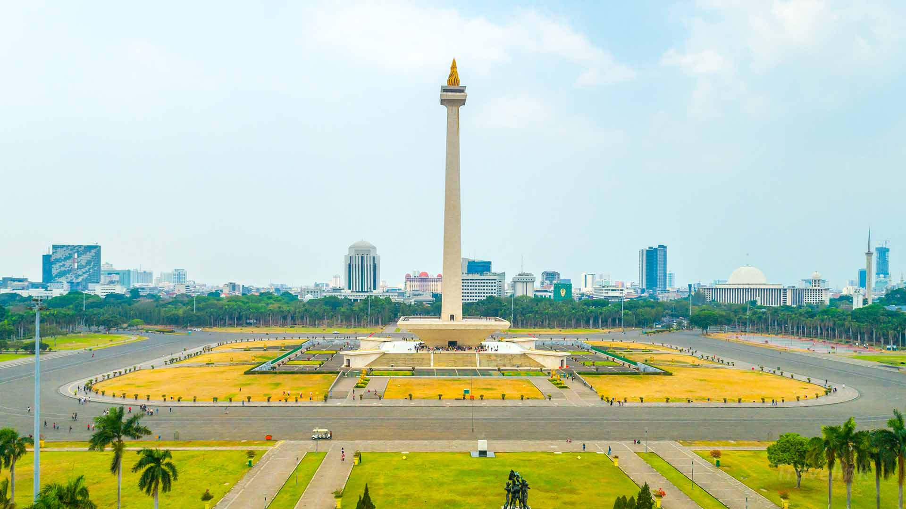

Gunung Bromo
Gunung Bromo merupakan salah satu gunung berapi paling terkenal di Indonesia yang berada di kawasan Taman Nasional Bromo Tengger Semeru. Gunung ini terkenal karena memiliki pemandangan alam yang sangat indah dan udara yang sejuk.
Keunikan Gunung Bromo terletak pada lautan pasir yang luas dan kawahnya yang masih aktif. Banyak wisatawan datang pada pagi hari untuk melihat matahari terbit dari Bukit Penanjakan.
Selain keindahan alamnya, kawasan Bromo juga memiliki budaya yang menarik dari masyarakat suku Tengger yang masih menjaga tradisi hingga sekarang.

Bali
Foto tersebut menampilkan gapura tradisional khas Bali yang terlihat megah dan artistik. Ukiran batu pada bangunan menunjukkan ciri khas budaya Bali yang sangat terkenal.
Di sekitar gapura terdapat pepohonan hijau dan pemandangan alam yang indah sehingga suasana terlihat sejuk dan menenangkan.
Bali dikenal sebagai salah satu destinasi wisata terbaik di Indonesia karena memiliki perpaduan antara budaya, alam, dan seni yang sangat menarik.

Danau Toba
Danau Toba merupakan danau vulkanik terbesar di Indonesia yang berada di Sumatera Utara. Pemandangan danau yang luas dan tenang membuat tempat ini terlihat sangat indah.
Bukit hijau yang mengelilingi danau menambah suasana alami dan sejuk. Tempat ini sering menjadi tujuan wisata karena memiliki panorama yang menenangkan mata.
Selain terkenal karena keindahannya, Danau Toba juga memiliki sejarah dan budaya yang sangat menarik untuk dipelajari.

Monas
Monumen Nasional atau Monas merupakan ikon kota Jakarta yang sangat terkenal di Indonesia. Monumen ini memiliki bentuk tugu tinggi dengan api emas di bagian atasnya.
Area di sekitar Monas terlihat bersih dan tertata rapi dengan taman hijau yang luas. Tempat ini sering digunakan masyarakat untuk berolahraga dan berwisata.
Monas dibangun untuk mengenang perjuangan rakyat Indonesia dalam meraih kemerdekaan sehingga menjadi simbol kebanggaan bangsa Indonesia.